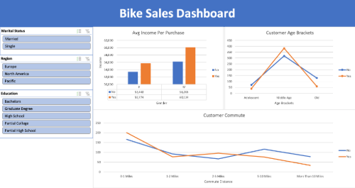

Job Layoff Dataset Cleaning in SQL Server
In this project I used SQL to clean job layoff data in order to make it useable for data analysis.
Data Analyst well versed in SQL, Excel, Tableau, PowerBI, Python, and Azure @Syrus-Kupiec
In this project I used SQL to clean job layoff data in order to make it useable for data analysis.

In this project I used Excel to clean bike sales data and create a pivot table based on age, commute distance, and income. I then used the pivot table to create a dashboard easily visualizing the data.
In this project I used Tableau to visualize Airbnb data useful for determining costs by location, time of year, and the size of the home.

In this project I used Python to write a function that takes an input of a file path, then all files in the destination are automatically sorted into their own folders based on file type.